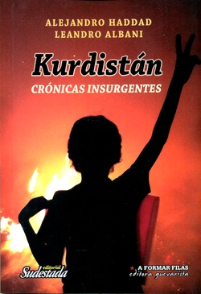

Buscar
Kurdistán: crónicas insurgentes
Edición Especial N° 10
Kurdistán: crónicas insurgentes
Cuadernos de Sudestada
Comprar edición impresaSumario
Compartir Articulo
El texto agrupa una serie de artículos publicados por Alejandro Haddad y Leandro Albani entre 2009 y 2013 en diferentes medios alternativos (Agencia Walsh, Resumen Latinoamericano, Sudestada y Marcha), y otros escritos inéditos o publicados en blogs, en los que se relata la lucha y la resistencia de la sociedad kurda en el presente.
Ambos periodistas han escrito desde el lugar de los hechos, con el ruido de los aviones del ejército turco alrededor de sus oídos, obstaculizando la frase justa que igualmente, con esfuerzo, sale en la pluma de Haddad. Trazan sus verdades durante el peligro inminente de un nuevo bombardeo sobre las montañas de Kandil, en el Kurdistán iraquí, en las que Albani dialoga con dirigentes y guerrilleros del Partido de los Trabajadores del Kurdistán (PKK), la organización político-militar que domina una extensa zona de territorio en Irak y en Siria, y tiene importante presencia en Irán y en Turquía.
Kurdistán. Crónicas insurgentes es el resultado de kilómetros de viajes por zonas de guerra y genocidios, en los que sufrieron los mismos peligros que los habitantes del lugar, alojados en tiendas de campaña, en pobres departamentos clandestinos o en las montañas donde los guerrilleros combaten a los aviones gubernamentales.
En ese trajín narran vivencias cotidianas en un territorio robado y desmembrado, con el pueblo kurdo delante de sus ojos recitándole historias milenarias y las actuales, su cultura viva, y su arraigo a ese suelo que le impiden tener pero que, sin embargo, habita.
112 páginas
Tamaño: 21x16 cm
ISBN 978-987-45021-5-5
Editorial Sudestada
Saenz 271, 1 P (CP: 1832) Lomas de Zamora, Argentina
Tel.: (54-11) 4292-1859
e-mail: sudestadarevista@yahoo.com.ar
www.revistasudestada.com.ar
--------------------------------
La entrevista a leandro Albani que le realizó el portal Marcha.org
Por Leonardo Candiano. Primera parte de nuestra charla con Leandro Albani sobre Kurdistán. Crónicas insurgentes, libro que realizó en dupla con Alejandro Haddad y que recoge, desde el lugar de los hechos, la lucha y la resistencia del pueblo kurdo.
Este viernes 15 de agosto a las 19:30 horas en la Taberna Vasca -Bar La Dignidad, Aguirre 29-, se presenta Kurdistán. Crónicas insurgentes (Sudestada, 2014), un libro que retrata la historia y la actualidad del pueblo kurdo a través del trabajo de dos periodistas argentinos que estuvieron en ese suelo dividido entre Turquía, Siria, Irán e Irak.
El texto agrupa una serie de artículos publicados por Alejandro Haddad y Leandro Albani entre 2009 y 2013 en diferentes medios alternativos (Agencia Walsh, Resumen Latinoamericano, Sudestada y Marcha), y otros escritos inéditos o publicados en blogs, en los que se relata la lucha y la resistencia de la sociedad kurda en el presente.
Ambos periodistas han escrito desde el lugar de los hechos, con el ruido de los aviones del ejército turco alrededor de sus oídos, obstaculizando la frase justa que igualmente, con esfuerzo, sale en la pluma de Haddad. Trazan sus verdades durante el peligro inminente de un nuevo bombardeo sobre las montañas de Kandil, en el Kurdistán iraquí, en las que Albani dialoga con dirigentes y guerrilleros del Partido de los Trabajadores del Kurdistán (PKK), la organización político-militar que domina una extensa zona de territorio en Irak y en Siria, y tiene importante presencia en Irán y en Turquía.
Son periodistas de a pie, caminantes de la información precisa y veraz. Objetivos, como decía Masetti, pero no neutrales, se ubican del lado del pueblo que sufre y lucha, que resiste y se esperanza por un futuro sin opresores ni oprimidos. Albani y Haddad van por esos senderos y enaltecen la labor periodística con su humildad y compromiso. Ambos se parecen: son cronistas de andar la calle mochila al hombro y grabador en mano, de experimentar la vida del hombre común que se mueve en el pueblo lleno de denuncias y porvenir. Y en este libro dejan constancia de todo eso.
Kurdistán. Crónicas insurgentes es el resultado de kilómetros de viajes por zonas de guerra y genocidios, en los que sufrieron los mismos peligros que los habitantes del lugar, alojados en tiendas de campaña, en pobres departamentos clandestinos o en las montañas donde los guerrilleros combaten a los aviones gubernamentales.
En ese trajín narran vivencias cotidianas en un territorio robado y desmembrado, con el pueblo kurdo delante de sus ojos recitándole historias milenarias y las actuales, su cultura viva, y su arraigo a ese suelo que le impiden tener pero que, sin embargo, habita.
Albani y Haddad nos ofrecen una realidad desconocida para nosotros, y lo hacen internalizando las esperanzas de sus entrevistados y los motivos de sus luchas, compartiendo sus experiencias, sus comidas, sus canciones. Así lograron producir escritos con rigor histórico y profesionalismo, sin el típico costumbrismo efectista del periodista best seller de los medios comerciales cuando aborda temas de este tipo.
Ahí andan con este nuevo libro en mano, como una herramienta más para los fusiles que luchan por la libertad de un pueblo prohibido en plena montaña, entre los susurros clandestinos de la militancia en un bar de Estambul o frente a ejércitos que una y otra vez descargan sus bombas y balas.
Sobre este texto y la realidad del pueblo kurdo charlamos con Leandro Albani, y esto nos dijo.
-Contanos qué es el Kurdistán.
-Kurdistán es una región de Medio Oriente. Cuando las potencias europeas a principios del siglo XX se van del lugar dividen esa región como la conocemos ahora, y al pueblo kurdo no le dan Estado. Kurdistán está constituido por el sudeste de Turquía y el norte de Irán, de Irak y de Siria. En esa zona está la mayoría del pueblo kurdo, que sufre una represión muy grande, por parte de Turquía sobre todo.
-¿Cómo surgió el viaje?
-A través de Mehmet Alí Dogan, un documentalista y antropólogo kurdo que vive en América Latina. Lo conocí y me propuso ir a los campamentos que tenía la guerrilla en Kandil. Eso fue en agosto del año pasado. Estuve trece días en Irak, de los cuales 10 fueron en las montañas de Kandil con los guerrilleros del PKK. La zona tiene el tamaño de Uruguay, y es controlada totalmente por el PKK. Estuvimos en cinco campamentos y además cruzamos al Kurdistán iraní por tierra.
-¿Cuál es la realidad del pueblo kurdo en Irak?
-Hoy, aún, el Estado kurdo no existe, salvo en el norte de Irak, donde hay un gobierno kurdo autónomo que lo comanda Masud Barzani, que es un dirigente que apoyó a Estados Unidos en la invasión de 2003 contra Sadam Hussein. Su ejército luchó junto al de Estados Unidos, con el acuerdo de que si se lograba destituir a Sadam, el Kurdistán iraquí iba a ser autónomo. Es un gobierno burgués que controla la zona más rica de Irak, sobre todo en petróleo. Dentro de esa región, en las montañas de Kandil está el PKK, que se enfrenta a Barzani.
-¿Qué es el PKK?
-Es una organización que viene del marxismo, que no lucha -ni desde la insurgencia armada ni desde la lucha política institucional y legal- por establecer un Estado kurdo, sino para que todas las regiones del Kurdistán logren su autonomía real. Lo que plantean en el PKK es que crear un nuevo Estado en Medio Oriente beneficiaría a Estados Unidos porque balcanizaría aún más la región y la seguiría dividiendo. Su máximo dirigente, Abdullah Öcalan, está preso hace más de diez años en Turquía, en una cárcel en una isla.
-¿Qué fue lo que más te impactó de tu experiencia en territorio de la resistencia kurda?
-Lo que más me impactó fue la convicción que tienen, la capacidad política que demuestran todo el tiempo. La guerrilla ya tiene 30 años. Y la vida cotidiana me impactó también. Más allá de la cuestión política, ideológica y militar más dura, ves cómo es la vida de los guerrilleros y las guerrilleras, siempre en el marco del confederalismo democrático que es su ideología, y cómo intentan vivir en comunidad.
El Kurdistán iraquí es la retaguardia de la guerrilla, ahí está toda la comandancia. Nosotros pudimos estar con tres de los seis comandantes máximos. Compartir la vida cotidiana fue de lo más interesante, ver cómo se desempeñaban día a día, poder hablar sobre el rol de la mujer en el interior de la organización que es muy importante. En el libro lo decimos: hay casi la misma cantidad de comandantes mujeres que varones. El PKK tiene una particularidad, y es que en todas las organizaciones, tanto legales como guerrilleras, la dirección siempre es mixta. Hacen mucho hincapié en el rol de la mujer, y es muy importante por cómo es Medio Oriente. En países como Arabia Saudita o en Qatar, la opresión a la mujer es alta y sus derechos muy limitados. Pudimos hablar con la comandante principal de la guerrilla en Siria, Rengin Botan, y nos decía que en Medio Oriente el respeto a la mujer pasa por entre sus piernas, y el PKK siempre intenta romper con eso. En sus escritos, Öcalan hace mucho hincapié en que la liberación de la mujer es fundamental para la realización de la revolución.
-¿Cómo fue la vida diaria en Kandil?
-Son campamentos muy tranquilos, pero con un peligro latente todo el tiempo. El primer día nos lo dijo el comandante que estaba con nosotros. Nos recibió muy bien, y cuando estábamos cenando, me dijo: "Acá estamos bailando sobre el peligro". La posibilidad de un bombardeo, de Turquía sobre todo, por más que estábamos en Irak, es constante. Ese era el peligro real de la zona. Cuando llegamos, hacía seis meses Turquía había bombardeado mucho. Después el trato cotidiano con los guerrilleros siempre fue muy cordial, muy ameno. El problema grande es Turquía, porque con los gobiernos de Irak, tanto el nacional como el del Kurdistán iraquí, hace años que están en una tregua y no hay combates, pero está todo latente, porque Kandil está rodeado por el ejército iraquí.
-¿Cuál es la relación del PKK con el islamismo político?
-El PKK es una organización atea, son muy críticos del islam, ya sea el ortodoxo de Al Qaeda, el Estado Islámico de Irak y el Levante (EIIL) que hoy combate en Irak, o lo que es el Frente Al Nusra en Siria, pero también tienen una mirada muy crítica de la Revolución Islámica iraní. Sin embargo, el PKK tiene unas posturas políticas muy flexibles. Eso no quiere decir que bajen sus banderas, de acuerdo a cuál es la región y cuál es el contexto, deciden qué política llevar adelante. Eso es interesante porque no tienen una línea monolítica. En Irak tienen una política, en Siria desde hace tres años llevan adelante otra, teniendo en cuenta que ahora dominan todo el norte de del país y están construyendo el confederalismo democrático. Los integrantes de la guerrilla remarcaban mucho que en Siria era el lugar donde podían llevar a la práctica más a fondo su ideología.
-¿Qué mirada tienen los guerrilleros kurdos de la realidad latinoamericana?
-Muestran mucho interés por América Latina. Preguntaban mucho sobre Chávez, las FARC y el EZLN. Desde hace unos años, el PKK tiene una mirada muy atenta y un interés mucho más grande sobre América Latina, por una razón muy puntual que es que desde hace más de una década impulsan la vida en comunidad, y eso los liga a América Latina, sobre todo con el EZLN y con el proceso en Bolivia. Es extraño, porque los referentes son el EZLN y las FARC, dos organizaciones que, si bien son político-armadas, son muy distintas.

Comentarios
Leandro Albani
Articulos más vistos


LIBRERÍA SUDESTADA

Colección infantil

Distribuidora de Libros

Suscripción

Sudestada en URUGUAY